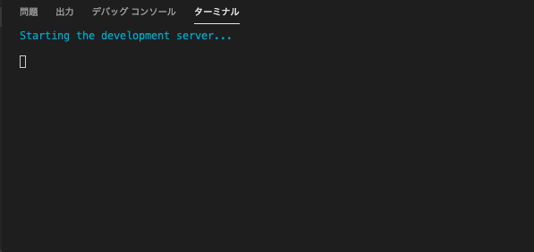
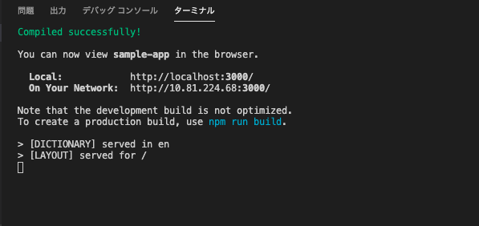
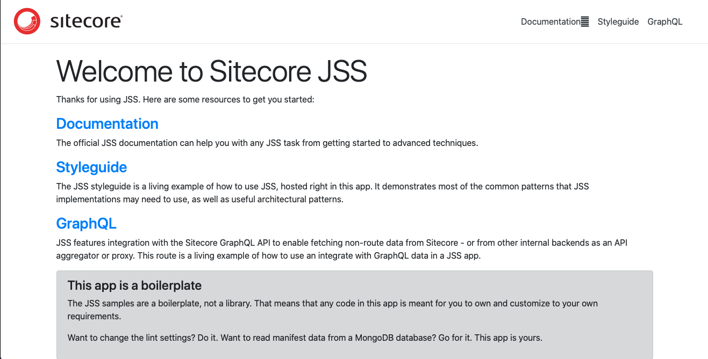

1.2. 環境の整備 ( macOS 編)¶
1.2.1. システム環境の整備¶
環境を整えるために、以下のコンポーネントをインストールしてください。
Node.js (LTS版) をダウンロードします
{kind=link}
ダウンロードしたファイルをインストールします。
{kind=link}
ターミナルでバージョンを確認します。
mizumac:Documents shinichi$ node --version
v12.13.1
mizumac:Documents shinichi$
1.2.2. JSS コマンドのインストール¶
JSS アプリを作るためのコマンドをインストールします。今回は以下のような手順で進めました。
mizumac:Quickstart.Docs shinichi$ cd ~
mizumac:~ shinichi$ sudo npm -g install @sitecore-jss/sitecore-jss-cli
Password:
+ @sitecore-jss/sitecore-jss-cli@12.0.0
updated 2 packages in 18.077s
コマンドラインのインストールが完了です。
1.2.3. サンプルプロジェクトの作成¶
今回は React のプロジェクトを作成します。アプリ名を決めて、以下のようにコマンドを実行してください。
jss create <your-app-name> <app-template-name>
後者の sample に関しては、 Sitecore JavaScript Services からソースコードをダウンロードする形となります。 今回は、以下のように実行します。
Mizumac:~ shinichi$ jss create sample-app react
JSS CLI is running in global mode because it was not installed in the local node_modules folder.
Acquiring templates from https://github.com/Sitecore/jss/archive/master.zip...
__________
__ / / __/ __/
/ // /\ \_\ \
\___/___/___/
JSS application sample-app is ready!
Next steps:
* Enable source control (i.e. git init)
* Try out your application with cd sample-app then jss start
* Connect to Sitecore with jss setup (optional)
* Check out the JSS documentation at https://jss.sitecore.net
Enjoy!
Enjoy! まで表示されれば、sample-app のフォルダの中にサンプルプロジェクトが出来上がります。
1.2.4. サンプルアプリの実行¶
早速作成されたディレクトリに移動して実行します。
cd sample-app
jss start
コマンドで jss start を実行すると、しばらくするとアクセスできる URL が表示されます（環境によってはブラウザが起動して表示されます）。
 {kind=link}
{kind=link}
表示された URL はサンプルのページが表示されています。
{kind=link}
ページが表示されていれば、完了となります。